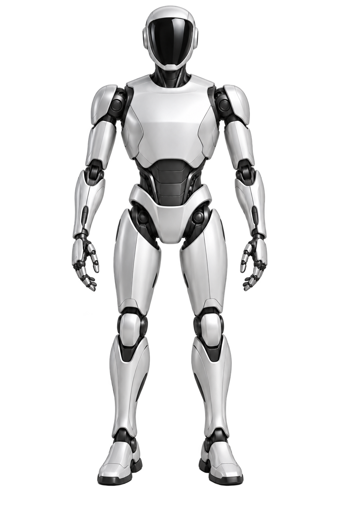

01 / 人形机器人CONCEPT MODEL
选择一个部位，向内探索。ROBOT EXPLORER — VOL. 01
ROBOT EXPLORER / 01
一个产业，多种形态。
选择你的起点。选择机器人后，可进入系统与组件。
LEARNING SPACE / 01
机器人入门。
从结构开始，建立一个可用于理解产品、客户与产业的知识框架。
SALES KNOWLEDGE / 01
销售助手。
从产品、客户与场景开始，准备一次更清楚的销售对话。